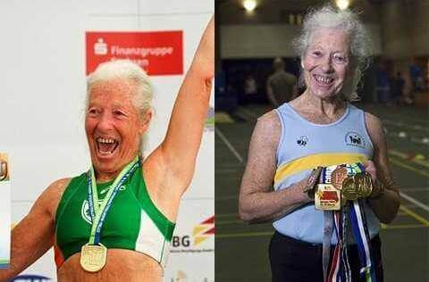

Storie di campioni: articolazioni sane a qualsiasi età
Oggi abbiamo incontrato l'ottantenne campionessa di atletica Dolores Campan. Ogni anno, dà del filo da torcere alle atlete più giovani e vince ancora competizioni internazionali, riuscendo allo stesso tempo a rimanere forte e in salute. Dolores sa meglio di chiunque altro che si può fare sport a livello agonistico a qualsiasi età.
Dolores, potrebbe per favore dirci come è arrivata a fare sport a livello agonistico?
Ho sognato di diventare una campionessa da quando ero bambina. Lo stereotipo voleva che ci si dovesse allenare fare stretching e riscaldarsi fin da giovanissimi. Questo sogno è rimasto con me per molti anni. Ma è solo quando sono andata in pensione che ho finalmente deciso di provarci.
E come ci è riuscita?
Beh, ho sempre controllato quello che mangio e bevo. Non ho mai fumato e non ho mai consumato alcol. Ho sempre camminato molto. Nonostante questo, intorno ai 50 anni ho avuto dei problemi alle articolazioni. Tuttavia, ho deciso di continuare a prepararmi per le gare. Mio marito mi ha sostenuta e mi ha aiutata a prepararmi per le grandi competizioni sportive, non solo per qualche maratona per dilettanti.

Dopo cinque anni, ho deciso di partecipare a una gara e ho vinto la mia prima medaglia. E mi è piaciuto. Anche se riuscivo a saltare e a correre come una ragazza giovane, il mio corpo continuava a dirmi, Dolores, stai invecchiando.
Le mie ginocchia hanno cominciato a scrocchiare quando correvo e quando facevo la spaccata. Non riuscivo a salire le scale senza riposarmi un attimo.
Ma non ha abbandonato lo sport, vero? Invece ha continuato a vincere.
Esatto. Sai, fare sport significa subire dei traumi. I veri vincitori fanno tutto superando il dolore e abituandosi ad esso. È l'altra faccia della vittoria.
Ero costantemente alla ricerca di qualcosa che mi potesse aiutare. Naturalmente, ho cercato di assumere più calcio e vitamine, ma non è stato sufficiente ad alleviare i dolori. Credo che sappiate quanto sono dannosi gli antidolorifici per lo stomaco. Ho iniziato ad usare . L'ho ordinato dal sito ufficiale.

Che cos'è? Un medicinale potente?
Niente affatto. Faccio il possibile per non danneggiare il mio corpo. Si tratta di un gel completamente naturale. Prima di iniziare ad usarlo, ne ho esaminato attentamente il contenuto. Contiene canfora, castagno, eucalipto, menta piperita e olio essenziale. Conosciamo tutti questi ingredienti fin da quando eravamo bambini. Ma non crederete quanto siano efficaci se mescolati insieme! Calmano il dolore acuto ed eliminano l'infiammazione e il gonfiore. Aiutano anche le articolazioni danneggiate a guarire.
È difficile credere che un gel naturale sia in grado di dare un tale effetto.
Beh, io ci ho creduto subito. Tutto ciò di cui il nostro corpo ha davvero bisogno è già presente in natura, non ci resta che usarlo!
A proposito, come si usa?
Io applicavo il gel due volte al giorno. Si assorbe velocemente e non si attacca ai vestiti. Cerco di non bagnarmi per almeno un'ora dopo l'applicazione.
Ha altri segreti su come mantenere il corpo giovane?
Provate a muovervi di più. Non importa quello che fate, sport a livello agonistico o esercizi a casa. Continuate a sorridere, a mangiare cibo sano e a utilizzare quando avete dolori articolari!